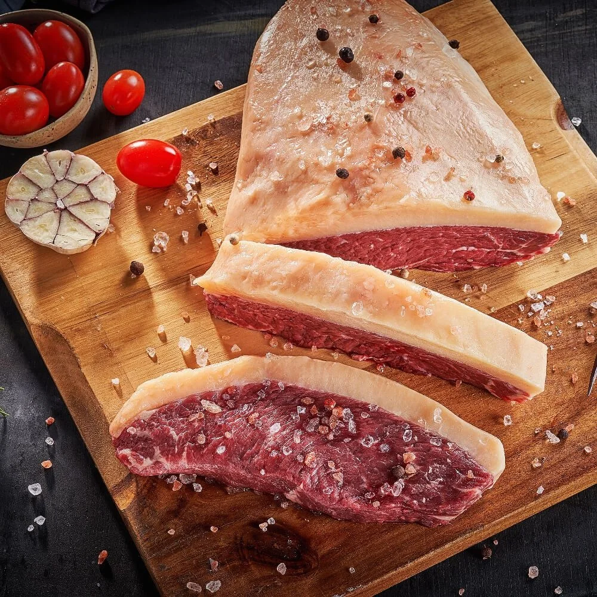
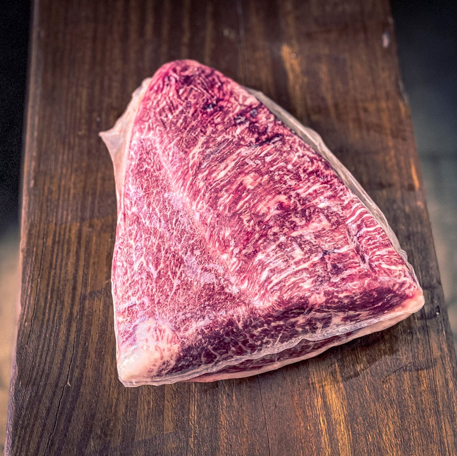
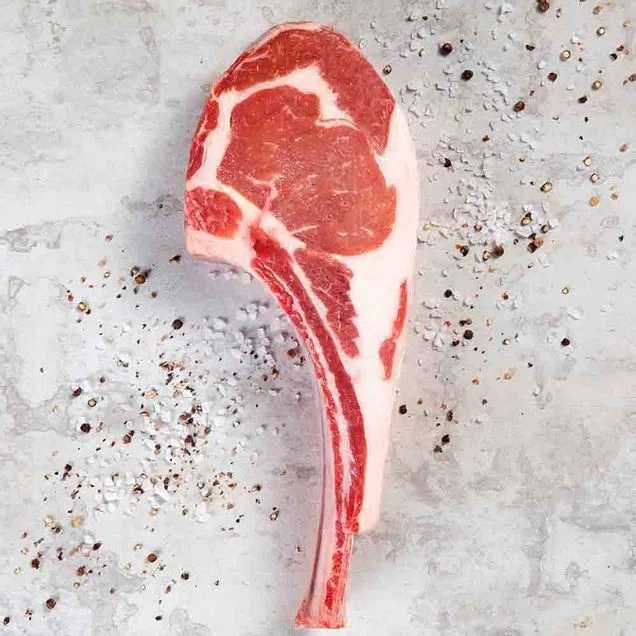

-
Picanha Angus
A Picanha é um corte tradicional brasileiro, com sabor e maciez característico que possui uma bela cobertura de gordura
R$ 178,00 KG
-
Picanha Wagyu
A carne de Wagyu é uma das carnes mais valorizadas no mercado gastronômico internacional. Um aroma único, sabor amanteigado, textura macia e suculenta
R$ 1.240,34 KG
-
Prime Rib
Prime Rib é um corte de primeira. Considerado a parte mais saborosa do filé de costela (Ancho)
R$ 125,00 KG